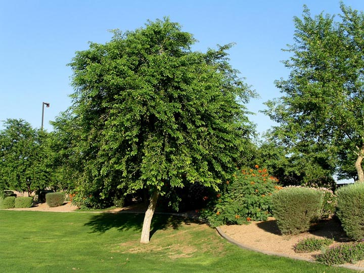

Dalbergia sissoo
Dalbergia sissoo is a decidious tree with an open spreading crown that reaches a height between 15-35 metres (Duke, 1983). The trunk is often crooked (Duke, 1983) with thin, grey bark, furrowed and exfoliating in narrow strips
as it matures (ICRAF, undated). It has a long taproot and an extensive lateral root system, often at the soil .....
See more